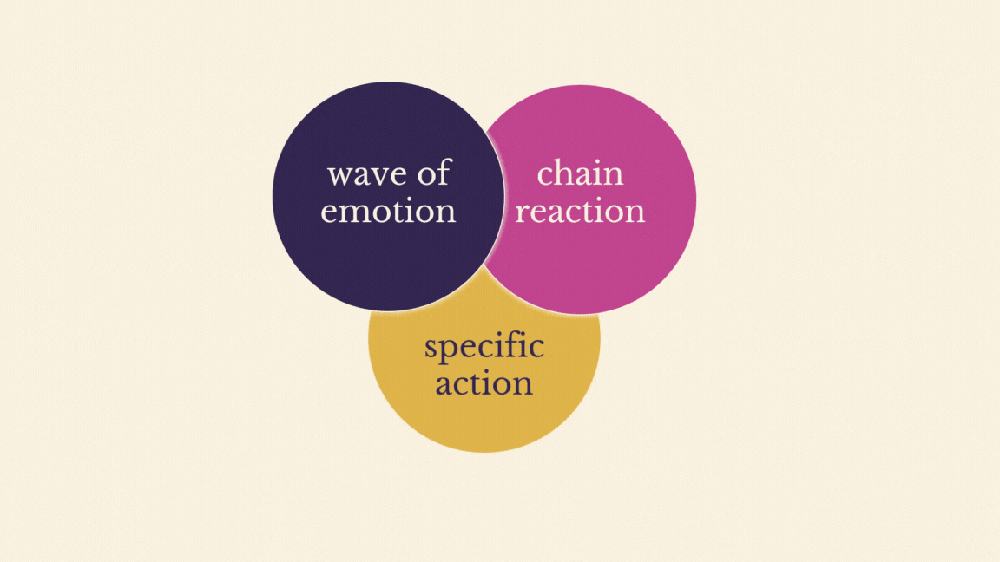
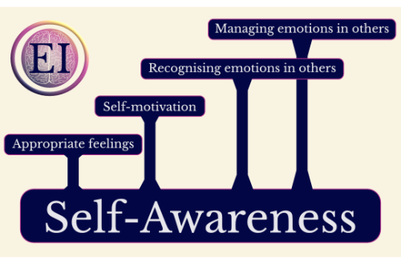

Emotional Intelligence
The meta-skill-set that changes your life. No, I'm not exaggerating. Emotional Intelligence is really THAT important. I learned it, I'm practicing it, and now I'm teaching it.
I've given my first webinar: an introduction to emotional intelligence. What it is, why it's so important and how to practice self-awareness. You can watch it in my Facebook group. I also have a brnad new website, and have created two courses.
Start date: 05.10.2022

I practiced:
- identifying my feelings
- feeling my emotions
- using audacity, a fantastic free open source audio recorder and editor
- how to write a good blog post
- how to use visuals and stories to teach well
- using PowerPoint transitions to create amazing videos

I learned:
- that self-awareness is the key EI skill because all the other EI skills build on it and that it can be practised in 10 minutes a day
- 7 Things About Emotions everyone should know
- why we have emotions
- that everything is a skill
- about the difference between emotions and feelings
- that there are 3 paths to self-awareness
- about OBS studio which is an insanely fantastic FREE streaming and recording software. Seriously, I'm in love!
- how to stream webinars on Facebook with OBS studio
- how to record webinars on Facebook and in OBS studio
- how to record tutorials with OBS studios
- how to record meditations with audacity
- how to create an entertaining and student-focused webinar
- how to set up and run a Facebook group
- how to create slide decks in PowePoint
- how to record slide videos in OBS studio
- how to put videos and audios together and edit the result in Shotcut